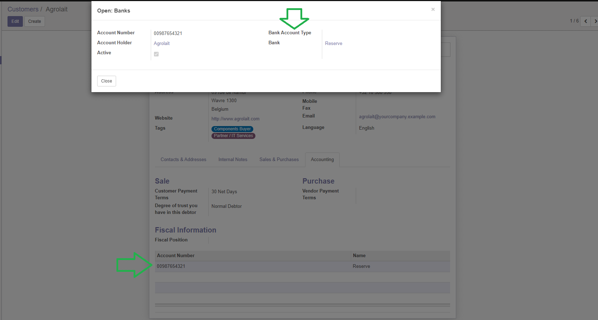

Add bank account sheet in partner view like previous Odoo 10.0

Aggiunge conti bancari in anagrafica nominativo come prima di Odoo 10.0



This module add some features to bank account:

Estensione conti bancari
Questo modulo estende le funzionalità dei conti bancari:
Authors | Autori:
Contributors | Partecipanti:
This module is maintained by the SHS_AV s.r.l..
This module is part of l10n-italy-supplemental project.
Published information on | Informazioni pubblicate: 2024-06-02